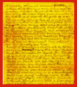
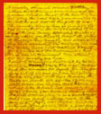

Charles Brooks to Emmet Brooks
August 21st, 1862
Dear Emmet,
You may think I have delayed writing too long, but it has been caused partly by my waiting to get a letter from home, not having received one since your brief note of 11th informing me of Andrew's return. Our stay in camp after the fight was but brief. Marched again on 16th to a point five miles beyond Orange C.H. and in sight of the Yankee Camp and remained there four days drawing and cooking rations almost every day so as to keep three days provisions on hand. Yesterday we again took up the line of March and advanced towards the enemy, our route being to the right of the railroad, and encamped near a little town called Stephensburg. This morning we took an early start--crossed the railroad at Brandy Station and are now within two miles of the Rappinock. The enemies are on the further bank for the purpose of preventing or retarding our advance, and considerable cannonading has been going on across the stream. The Yankees retreated from Culpeper C.H. yesterday leaving twelve hundred wounded men.
A cavalry skirmish occurred yesterday, in which sixty prisoners were taken and the Yankees routed. Most of the dwelling houses along the road have been deserted by the whites and left to the fate of war. The country down here is generally flat and poor, but in the neighborhood of Orange C.H. are many splendid fields of corn, which continually tempt the soldier to trespass. Our cavalry and some artillery have succeeded in crossing the river. Our cavalry have just captured twenty five Yankees and two Ambulances. Gen. Lee is here in command. Gen. Stuart and his Cavalry are here.
I sent to Waynesboro last week by Mr. Davidson $206.00; $94.00 for Andrew and the remainder for Myself. You take your pay out of it, and as I am not getting home very fast will have to make the trade in pants we spoke of, which will have me in your debt--$21.00. I would like to have the pants by the first chance you have of sending them. Mr. Hill declines going in as a substitute and I have heard nothing more of the man of 2nd Regt; dont think he has ever returned. Saw James White a few days ago; said Andrew was looking quite thin having been reduced by scanty fare. I sent the little sword I spoke of to Waynesboro by Harry Arnall, who is discharged. Please say in your next whether you got the money; disliking to carry it--I thought best to send it even by indirect means. On Monday all our wagons were taken from us except enough to have cooking utensils and officers baggage and our mess boxes thrown out and bags substituted. So we have to tote our little all on our backs, which with gun cartridge box and haversack containing three days rations is quite burdensome. Four of five boys broke down yesterday. Tom White Jr. and Henry Meyrs are in a very fair way of getting transfers to Cavalry. I forgot to say that James White told me that there were two men in his company who would probably be discharged who might be got as substitutes.
I will soon need a hat and would like to have a pocket-ink stand and penn holder if this can be bought. Will also take one of your homemade pocket books if you have an extra one or can conveniently make one. Andrew had better have his knapsack as small as possible, they can be drawn here.
Suppose I may think of this as Aunt Mary's bridal day, if so, may it be an era of hapiness in her life.
Friday 22nd
Dear Ma. Got your long looked for letter this morning. Tell Andrew and Mary I wish they were as good at writing as promising. We are still near the Rappinock, not crossed yet. A considerable amount of cannonading has been going on and some picket firing. Hope the Yankees [mutilated] last night. I can [mutilated] pleasant it would be to be tasting Aunt mary's wedding cake then eating hard crackers and listening at the whistling of cannon balls, but it is all for the best. Gen Longstreet is on another road. I don't think there will be much fighting just now. Would be very glad if Andrew could change his branch of service or get a substitute. Three men were shot last Monday as deserters. One by the name of Andrew G. Riddle of Augusta and an other, Mr. Layman, most probably a [mutilated]. . .
Love to all at home and at Uncle Ben's
Your affectionate Son,
Charles
 Return to the Booker Collection
Return to the Booker Collection